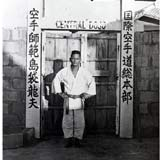

Isshinryu Karate is based on 15 basic upper body techniques and 10 lower body basics.
These techniques are the fundamentals of Isshinryu Karate from which all other techniques are built off of.
It is important to learn these techniques correctly before getting into more advanced moves.